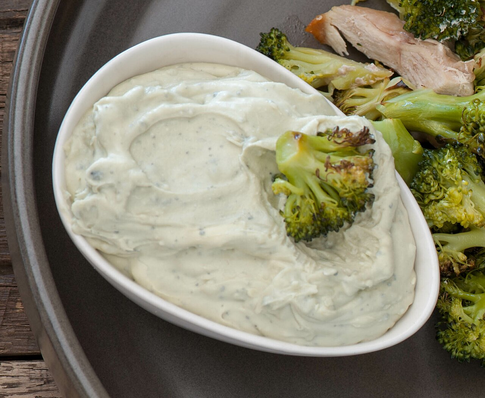

a sauceBlue cheese dressing
also: bleu cheese · blue cheese · chunky blue
In Buffalo it arrives without being ordered. Asking for ranch instead is noticed.

A thick white dip of blue cheese with mayonnaise and buttermilk, sour cream or yogurt, plus milk, vinegar, onion powder and garlic powder. A vinaigrette version exists — salad oil, blue cheese, vinegar and seasonings — and is not what comes with wings. Sold by most major dressing makers in the United States and Canada, and served as the dip beside Buffalo wings and raw vegetables.
The story Cited · wp-blue-cheese-dressing
It reached the wing on the first night, if the Anchor Bar's account holds: Teressa Bellissimo sent the wings out with celery and blue cheese taken off the bar's antipasto tray. Whether that was 1964 is one of the arguments the origin carries.
What is not argued is which dip Buffalo uses. The standard description of a Buffalo wing gives blue cheese or ranch; the same source records that ranch is the most popular wing dip in the United States. Buffalo's own bars serve blue cheese.
The dip has a chemistry problem the argument ignores. Water and oil separate in it — an unstable emulsion — and salad dressings spoil through organisms like Saccharomyces bailii and Lactobacillus fructivorans, the latter an acid-tolerant facultative anaerobe that survives the low pH a blue cheese dressing sits at.
Inference — the chunks are the point. A smooth blue cheese dressing and a chunky one taste alike on a spoon and do not behave alike on a wing, because the chunks survive the dip and the smooth part does not.
How it is done Tradition
Cold, in a cup, beside the wing — never poured over it. A wing goes in, comes out with a load of cheese, and the celery goes in after to clear the palate. Home versions whisk mayonnaise, buttermilk and sour cream with lemon juice or vinegar and fold blue cheese in at the end, cubed rather than crumbled so some of it stays in pieces.
Today Harvested · fdc-kens-chunky-blue-cheese
On every wing plate in western New York and in the dip section of every wing chain. As of 16 September 2026 the USDA label panel for Ken's Steak House Chunky Blue Cheese Dressing reads 290 mg sodium, 13 g fat and 1 g sugar in a 2-tablespoon serving — 145 mg and 0.5 g in one tablespoon. Soybean oil is first; blue cheese is fourth, behind water and vinegar.
The particulars
| base | dairy |
|---|---|
| heat | none |
| region | Western New York, The United States |
| confidence | high · updated 2026-09-16 |
On the label
| what was read | bottle · Ken's Foods, Inc. |
|---|---|
| pepper or chile | — |
| vinegar | #3 on the label |
| butter or oil | #1 on the label |
| tomato | — |
| sugar | #6 on the label |
| soy sauce | — |
| mustard | — |
| sodium per tablespoon | 145 mg (the FDA counts 2,300 mg as a day) |
| sugar per tablespoon | 0.5 g (a tablespoon of table sugar is about 12.6 g) |
| Scoville | nobody publishes one for this bottle |
| the label, in order | soybean oil, water, distilled vinegar, blue cheese (pasteurized milk, cheese cultures, salt, enzymes), salt, sugar, modified corn starch, natural flavor, palm oil, sodium and calcium caseinates, propylene glycol alginate, lactic acid, potassium sorbate (preservative), xanthan gum, garlic, polysorbate 60, onion, yeast extract, spice, cellulose gum, calcium disodium EDTA, locust bean gum, beta carotene (color) |
Read from this page, 2026-09-16. Ken's Steak House Chunky Blue Cheese Dressing, 16 fl oz. Label serving is 2 Tbsp (30 g); sodium 290 mg and sugars 1 g per serving, so 145 mg and 0.5 g per tablespoon. soy_rank is 0 — soybean oil at rank 1 is a fat and is counted under fat_rank. Palm oil at 9 is a second fat the single rank cannot show. No chile, no heat word, no Scoville number. The house dressings Buffalo bars make have no label. Every bottle we have read is on the sauce page.
Recipes you can use
Old cookbooks are printed whole, spelling and all. Where a recipe is still somebody's copyright, you get the ingredient list and a link to the rest.
Blue Cheese Dressing
- 2 tbsp (30 ml) lemon juice or vinegar (cider or white wine)
- 2/3 cup (160 ml) buttermilk
- 1 cup (230 g) mayonnaise
- ¾ cup (180 g) sour cream
- ½ tsp salt
- ½ tsp black pepper
- ½ tsp garlic powder
- ½ tsp onion powder
- 4 oz (115 g) any variety of blue cheese
Makes 3 cups (770 g).
Wikibooks Cookbook, CC BY-SA 4.0, copied in full with the source named. The page says it is adapted from the Buttermilk Ranch Dressing recipe on the same site — the two dips are one recipe apart.
Cream Dressing II
- 1 teaspoon mustard
- 1 teaspoon salt
- 2 teaspoons flour
- 1½ teaspoons powdered sugar
- Few grains cayenne
- 1 teaspoon melted butter
- Yolk 1 egg
- ⅓ cup hot vinegar
- ½ cup thick cream
Copied verbatim, old spellings kept. No blue cheese in it — a thick cooked cream dressing with cayenne and vinegar, the sort of dip an American table had before a bottled one existed.
Not to be confused with
- Ranch dressing — Cheese against herbs. Blue cheese dressing has visible blue cheese in it; ranch has buttermilk, garlic, onion, chives, parsley and dill.
Who it runs with
Who talks about it
Pictures
{kind=link}
{kind=link}
Where we got it
- Blue cheese dressing · link
- Buffalo wing · link
- Anchor Bar · link
- Ken's Steak House Chunky Blue Cheese Dressing — branded food label (FDC ID 2673535) · link
- Cookbook:Blue Cheese Dressing · link
- The Boston Cooking-School Cook Book — Fannie Merritt Farmer, 1910 · link
Where it came from: Cited a source we name · Harvested pulled from an open dataset · Tradition what the tradition says, hedged · Inference this project's reasoning · Field somebody stood there. This record as JSON.